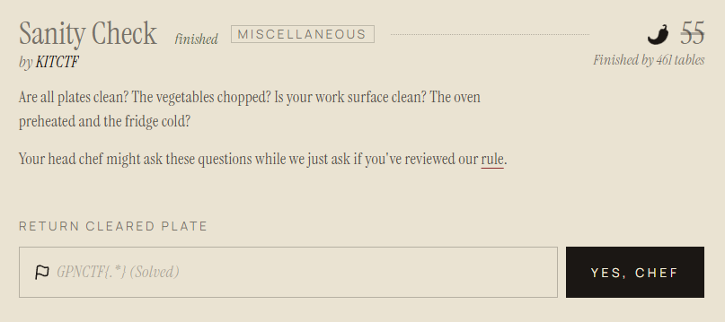
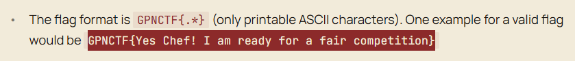
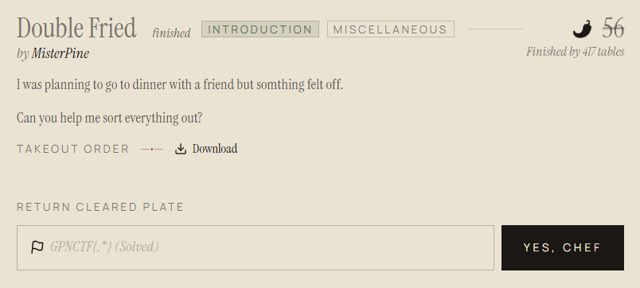
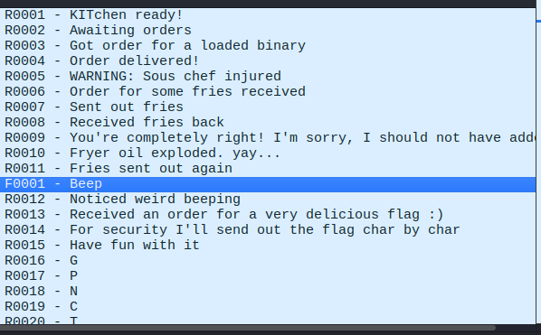
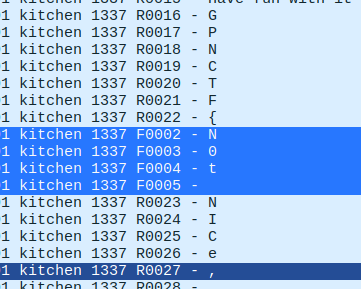
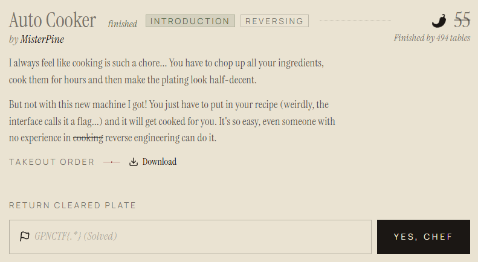
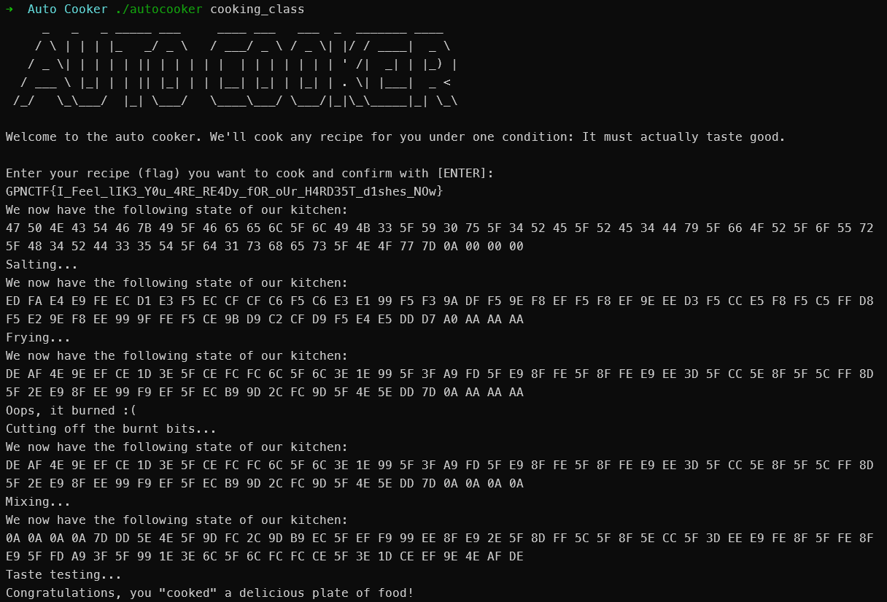

GPN CTF 2026 Writeup
因為考上台大了，這個暑假打算上CTFtime上找一些比賽來打。本來想說畢業當周周末來打這個GPN CTF 2026，結果開賽前突然看到零日餅乾社裡傳一個ISIP-HS CTF，比賽時間包含這個GPN CTF，結果就變成GPN CTF只解了兩三題(還簡單題XD)(都在打ISIP-HS CTF)。
Sanity Check

Welcome題，點進Rule看即可

Flag:
GPNCTF{Yes Chef! I am ready for a fair competition}
Double Fried

題目給了一個pcap檔案，用Wireshark去開


發現訊息有R開頭跟F開頭兩種，而從圖一可以猜出F開頭的是雜訊，所以我們只看R開頭的。
用
frame contains "R"進行篩選然後手動把Flag字母接起來
Flag:
GPNCTF{NICe, yOu FoUnD 0U7 wHO dID NOt b3L0ng ThEr3}
Auto Cooker

把題目給的檔案丟進IDA逆向
int __fastcall main(int argc, const char **argv, const char **envp)
{
_BOOL4 v4; // [rsp+1Ch] [rbp-4h]
v4 = 0;
if ( argc > 1 )
v4 = strcmp(argv[1], "cooking_class") == 0;
printf("%s", HEADER[0]);
printf("%s\n\n", WELCOME);
puts("Enter your recipe (flag) you want to cook and confirm with [ENTER]:");
fgets(RECIPE, 64, _bss_start);
check_recipe_length();
FOOD = *(_QWORD *)RECIPE;
qword_404128 = qword_4040E8;
qword_404130 = qword_4040F0;
qword_404138 = qword_4040F8;
qword_404140 = qword_404100;
qword_404148 = qword_404108;
qword_404150 = qword_404110;
qword_404158 = qword_404118;
explain_current_food(v4);
salt();
explain_current_food(v4);
fry();
explain_current_food(v4);
trim();
explain_current_food(v4);
mix();
explain_current_food(v4);
taste();
puts("Congratulations, you \"cooked\" a delicious plate of food!");
return 0;
}發現它會對輸入做一連串處理，最後taste品嘗一下
看起來是他會檢查你的輸入是不是Flag，是的話就會Congratulations
首先是我們後面的函式如果要執行，都需要v4為真才行(看完下面程式碼你就動了)，所以我們在執行程式時需要傳入cooking_class這個參數。也就是
./autocooker cooking_class接著一一分析每個函式
check_recipe_length
__int64 check_recipe_length()
{
__int64 result; // rax
if ( RECIPE[TARGET_LENGTH] || (result = (unsigned __int8)RECIPE[TARGET_LENGTH - 1], !(_BYTE)result) )
{
puts("Your recipe is too complicated or too simple, I already know it won't taste good :(");
exit(1);
}
return result;
}我們分析
RECIPE[TARGET_LENGTH] || (result = (unsigned __int8)RECIPE[TARGET_LENGTH - 1], !(_BYTE)result)這個判斷式的意思。
前半段檢查是否RECIPE[TARGET_LENGTH] != 0。由於C的字串結尾會填入\0
後半段用了,運算符，代表先執行前面的result = (unsigned __int8)RECIPE[TARGET_LENGTH - 1]，再用!(_BYTE)result進行判斷，
即檢查是否result == 0。因此上面那串等價於：
RECIPE[TARGET_LENGTH] != '\0'
|| // OR
RECIPE[TARGET_LENGTH-1] == '\0'而RECIPE是用fget讀入，因此字串結尾會是\n\0
而我們點進去TARGET_LENGTH可以看到他的數值為3Dh，轉成10進位就是61。
因此我們需要輸入長度為60的字串(加上'\n'剛好61個字)
即Flag的長度為60
salt
__int64 salt()
{
__int64 result; // rax
unsigned int i; // [rsp+Ch] [rbp-4h]
puts("Salting...");
for ( i = 0; ; ++i )
{
result = i;
if ( i > 0x3F )
break;
*((_BYTE *)&FOOD + (int)i) ^= GRAIN_OF_SALT;
}
return result;
}這串程式碼表示將字串中的每個字(包括最後的\n和\0，還有字串後面(因為雖然字串結束了，但RECIPE(或說FOOD)陣列大小為64，還沒結束)陣列初始化時的兩個\0)和GRAIN_OF_SALT XOR
點進去可發現GRAIN_OF_SALT的值為0AAh，即0xAA
fry
__int64 fry()
{
__int64 result; // rax
signed int i; // [rsp+Ch] [rbp-4h]
puts("Frying...");
for ( i = 0; ; ++i )
{
result = (unsigned int)i;
if ( (unsigned int)i > 0x3F )
break;
*((_BYTE *)&FOOD + i) = (*((_BYTE *)&FOOD + i) >> 4) | (16 * *((_BYTE *)&FOOD + i));
}
return result;
}依樣是對每個字操作，操作為以下這句：
*((_BYTE *)&FOOD + i) = (*((_BYTE *)&FOOD + i) >> 4) | (16 * *((_BYTE *)&FOOD + i));我們先令unsigned char x = *((_BYTE *)&FOOD + i);，則上面那段程式碼變為：
x = ( x >> 4 ) | ( 16 * x )x >> 4會取出x的高4位
16 * x相當於x << 4，又一個char只有8bits，因此多出來的4bits會直接被捨棄
比如若x = 0x10111001
x >> 4 為 0x00001011
16 * x 為 0x10010000
因此這個函式的功能是交換每個字的高4bits和低4bits，如0xED變成0xDE。
trim
__int64 trim()
{
__int64 result; // rax
unsigned int i; // [rsp+Ch] [rbp-4h]
puts("Oops, it burned :(\nCutting off the burnt bits...");
for ( i = TARGET_LENGTH; ; ++i )
{
result = i;
if ( i > 0x3F )
break;
*((_BYTE *)&FOOD + (int)i) &= 0xFu;
}
return result;
}for迴圈從i = TARGET_LENGTH，即0x3D開始，
而和0xFu (u代表unsigned int) AND 表示刪除高4bits。
因此此函式功能為：刪掉末三個數的高位
因此
0xAA 0xAA 0xAA --> 0x0A 0x0A 0x0A
mix
__int64 mix()
{
__int64 result; // rax
_QWORD v1[9]; // [rsp+0h] [rbp-50h]
unsigned int i; // [rsp+4Ch] [rbp-4h]
puts("Mixing...");
v1[0] = FOOD;
v1[1] = qword_404128;
v1[2] = qword_404130;
v1[3] = qword_404138;
v1[4] = qword_404140;
v1[5] = qword_404148;
v1[6] = qword_404150;
v1[7] = qword_404158;
for ( i = 0; ; ++i )
{
result = i;
if ( i > 0x3F )
break;
*((_BYTE *)&FOOD + (int)i) = *((_BYTE *)v1 + 63LL - (int)i);
}
return result;
}把FOOD整串顛倒。
taste
__int64 taste()
{
__int64 result; // rax
unsigned int i; // [rsp+8h] [rbp-8h]
int v2; // [rsp+Ch] [rbp-4h]
puts("Taste testing...");
v2 = 0;
for ( i = 0; ; ++i )
{
result = i;
if ( i > 0x3F )
break;
v2 |= *((_BYTE *)&FOOD + (int)i) != (unsigned __int8)DELICIOUS[i];
}
if ( v2 )
{
puts("YUCK!\nOur taste tester thinks your recipe produces bad food, we cannot serve this...");
exit(1);
}
return result;
}檢查是否FOOD中每一位都跟DELICIOUS中的相同。
因此，我們只要取出DELICIOUS的值，並把四個步驟逆著推回去就好。
exploit
#!/usr/bin/python3
delicious = [
0x0A, 0x0A, 0x0A, 0x0A, 0x7D, 0xDD, 0x5E, 0x4E,
0x5F, 0x9D, 0xFC, 0x2C, 0x9D, 0xB9, 0xEC, 0x5F,
0xEF, 0xF9, 0x99, 0xEE, 0x8F, 0xE9, 0x2E, 0x5F,
0x8D, 0xFF, 0x5C, 0x5F, 0x8F, 0x5E, 0xCC, 0x5F,
0x3D, 0xEE, 0xE9, 0xFE, 0x8F, 0x5F, 0xFE, 0x8F,
0xE9, 0x5F, 0xFD, 0xA9, 0x3F, 0x5F, 0x99, 0x1E,
0x3E, 0x6C, 0x5F, 0x6C, 0xFC, 0xFC, 0xCE, 0x5F,
0x3E, 0x1D, 0xCE, 0xEF, 0x9E, 0x4E, 0xAF, 0xDE
]
delicious.reverse() # re-mix
# re-trim
for i in (61,62,63):
delicious[i] = 0xAA
delicious[60] = 0x0A
# re-fry
for i in range(64):
delicious[i] = (delicious[i] >> 4 | delicious[i] << 4) & 0xFF
# re-salt
for i in range(64):
delicious[i] ^= 0xAA
print("".join( chr(h) for h in delicious))執行後拿到
Flag: GPNCTF{I_Feel_lIK3_Y0u_4RE_RE4Dy_fOR_oUr_H4RD35T_d1shes_NOw}
以下為AutoCooker執行畫面，可以此觀察字串的變化：



![[演算法] 線性篩](/2026/06/11/%E6%BC%94%E7%AE%97%E6%B3%95-%E7%B7%9A%E6%80%A7%E7%AF%A9/ascii_art_2.png)